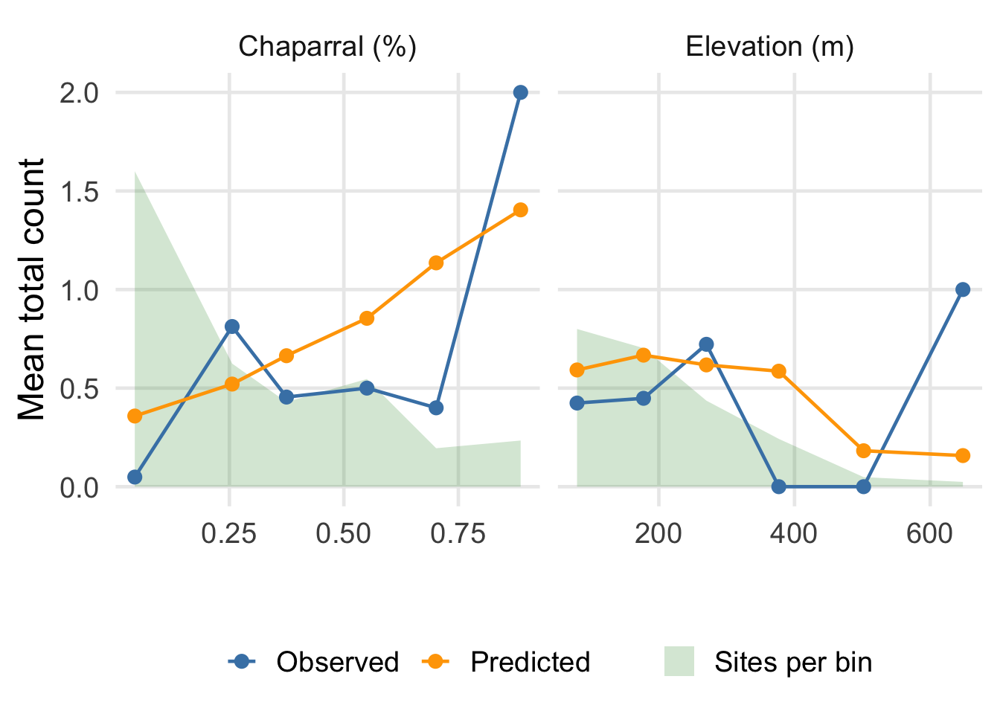

library(unmarked)
library(ggplot2)
set.seed(1792)
data(issj)
truncation_distance <- 300
bin_width <- 100
dist_breaks <- seq(0, truncation_distance, by = bin_width)
meter_sq_per_hectare <- 10000
area_around_point <- pi * truncation_distance^2 / meter_sq_per_hectare
# these will be helpful for plotting later on
mean_elev <- mean(issj$elevation)
sd_elev <- sd(issj$elev)
mean_chap <- mean(issj$chaparral)
sd_chap <- sd(issj$chaparral)
# scale returns a matrix
site_covs <- scale(issj[, c("elevation", "forest", "chaparral")])
site_covs <- data.frame(site_covs, area = area_around_point)
count_column_index <- grep("issj", colnames(issj))
count_matrix <- as.matrix(issj[, count_column_index])
umf <- unmarkedFrameDS(
y = count_matrix,
siteCovs = site_covs,
dist.breaks = dist_breaks,
unitsIn = "m",
survey = "point"
)Binned prediction curves
Evaluating predictions from count models in unmarked
train_proportion <- 0.7
site_count <- nrow(count_matrix)
train_index <- sample(site_count, train_proportion * site_count)
train_umf <- umf[train_index, ]
test_umf <- umf[-train_index, ]There are 214 sites available for training and 93 available for test.
fit <- distsamp(
~chaparral ~ chaparral + elevation + offset(log(area)),
train_umf,
keyfun = "halfnorm",
output = "abund"
)
summary(fit)
Call:
distsamp(formula = ~chaparral ~ chaparral + elevation + offset(log(area)),
data = train_umf, keyfun = "halfnorm", output = "abund")
Abundance (log-scale):
Estimate SE z P(>|z|)
(Intercept) -2.567 0.163 -15.77 5.09e-56
chaparral 0.573 0.183 3.14 1.69e-03
elevation -0.226 0.104 -2.18 2.95e-02
Detection (log-scale):
Estimate SE z P(>|z|)
(Intercept) 4.6427 0.0707 65.668 0.000
chaparral -0.0757 0.0839 -0.902 0.367
AIC: 723.2655
Number of sites: 214
Survey design: point-transect
Detection function: halfnorm
UnitsIn: m
UnitsOut: ha The echo: false option disables the printing of code (only output is displayed).
fit@data <- test_umf
y_pred <- fitted(fit)
y_true <- test_umf@yviz_bin_count <- 6
# take the mean of covariate, observations, and predictions by covariate bin
make_plot_df <- function(covariate) {
values <- test_umf@siteCovs[, covariate]
bins <- cut(values, breaks = viz_bin_count, labels = FALSE)
plot_df <- data.frame(
x = tapply(values, bins, mean),
Observed = tapply(rowSums(y_true), bins, mean),
Predicted = tapply(rowSums(y_pred), bins, mean),
covariate = covariate,
n = tapply(values, bins, length)
)
return(plot_df)
}
# modify some of the values to make the plot more attractive
elev_df <- make_plot_df("elevation")
elev_df$x_real <- elev_df$x * sd_elev + mean_elev
elev_df$covariate <- "Elevation (m)"
chap_df <- make_plot_df("chaparral")
chap_df$x_real <- chap_df$x * sd_chap + mean_chap
chap_df$covariate <- "Chaparral (%)"
# we're going to add a shaded area that shows the number of sites per bin
elev_df$ribbon <- elev_df$n / max(elev_df$n) * max(elev_df$Observed) * 0.8
chap_df$ribbon <- chap_df$n / max(chap_df$n) * max(chap_df$Observed) * 0.8
# print the output
combined_df <- rbind(elev_df, chap_df)
knitr::kable(combined_df, digits = 2)| x | Observed | Predicted | covariate | n | x_real | ribbon | |
|---|---|---|---|---|---|---|---|
| 1 | -0.98 | 0.42 | 0.59 | Elevation (m) | 33 | 79.41 | 0.80 |
| 2 | -0.20 | 0.45 | 0.67 | Elevation (m) | 29 | 177.43 | 0.70 |
| 3 | 0.55 | 0.72 | 0.62 | Elevation (m) | 18 | 270.12 | 0.44 |
| 4 | 1.40 | 0.00 | 0.59 | Elevation (m) | 10 | 376.84 | 0.24 |
| 5 | 2.40 | 0.00 | 0.18 | Elevation (m) | 2 | 501.85 | 0.05 |
| 6 | 3.57 | 1.00 | 0.16 | Elevation (m) | 1 | 648.22 | 0.02 |
| 11 | -0.97 | 0.05 | 0.36 | Chaparral (%) | 41 | 0.04 | 1.60 |
| 21 | -0.06 | 0.81 | 0.52 | Chaparral (%) | 16 | 0.26 | 0.62 |
| 31 | 0.45 | 0.45 | 0.66 | Chaparral (%) | 11 | 0.37 | 0.43 |
| 41 | 1.20 | 0.50 | 0.85 | Chaparral (%) | 14 | 0.55 | 0.55 |
| 51 | 1.84 | 0.40 | 1.14 | Chaparral (%) | 5 | 0.70 | 0.20 |
| 61 | 2.63 | 2.00 | 1.40 | Chaparral (%) | 6 | 0.89 | 0.23 |
plot_df <- tidyr::pivot_longer(combined_df, cols = c("Observed", "Predicted"))
ggplot(plot_df, aes(x = x_real, y = value, color = name)) +
geom_ribbon(
data = plot_df,
aes(x = x_real, ymin = 0, ymax = ribbon, fill = "Sites per bin"),
inherit.aes = F,
alpha = 0.2
) +
geom_point() +
geom_line() +
facet_wrap(~covariate, scales = "free_x") +
scale_color_manual(values = c(Observed = "steelblue", Predicted = "orange")) +
scale_fill_manual(values = "forestgreen") +
theme_minimal(base_size = 18) +
theme(panel.grid.minor = element_blank(), legend.position = "bottom") +
labs(x = "", y = "Mean total count", color = NULL, fill = NULL)
# # Helper: bin a covariate, average pred & true per bin
# make_plot_df <- function(covariate_vals, covariate_name) {
# bins <- cut(covariate_vals, breaks = viz_bin_count, labels = FALSE)
# # y_pred and y_true are matrices; average across all distance bins and sites per viz bin
# data.frame(
# x = tapply(covariate_vals, bins, mean),
# Observed = tapply(rowMeans(y_true), bins, mean),
# Predicted = tapply(rowMeans(y_pred), bins, mean),
# covariate = covariate_name
# ) |> reshape(
# varying = c("Observed", "Predicted"),
# v.names = "count", timevar = "type",
# times = c("Observed", "Predicted"),
# direction = "long"
# )
# }
# combined_df <- rbind(
# make_plot_df(test_umf@siteCovs$elevation, "Elevation"),
# make_plot_df(test_umf@siteCovs$chaparral, "Chaparral")
# )